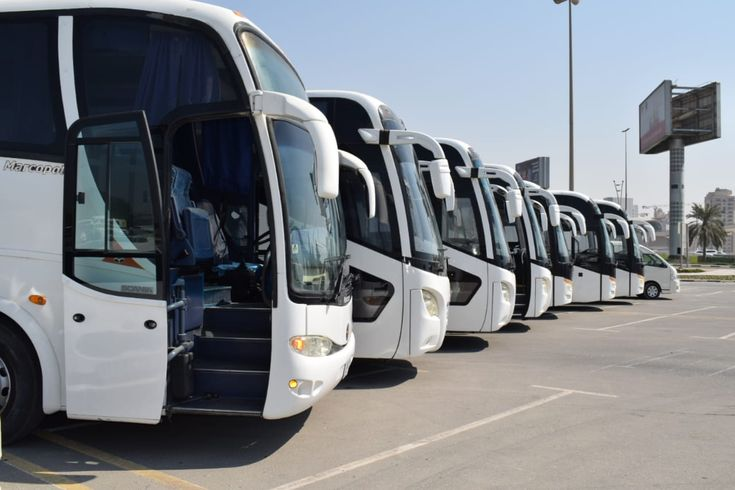
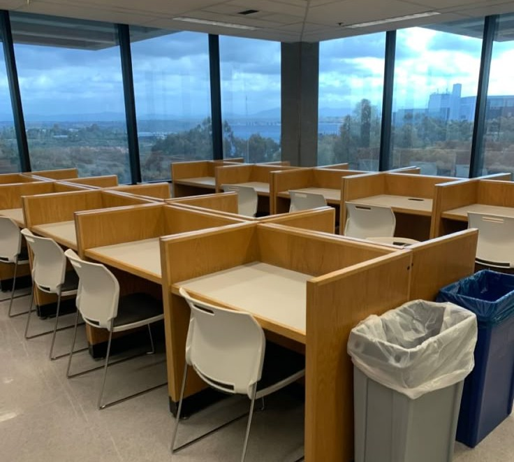
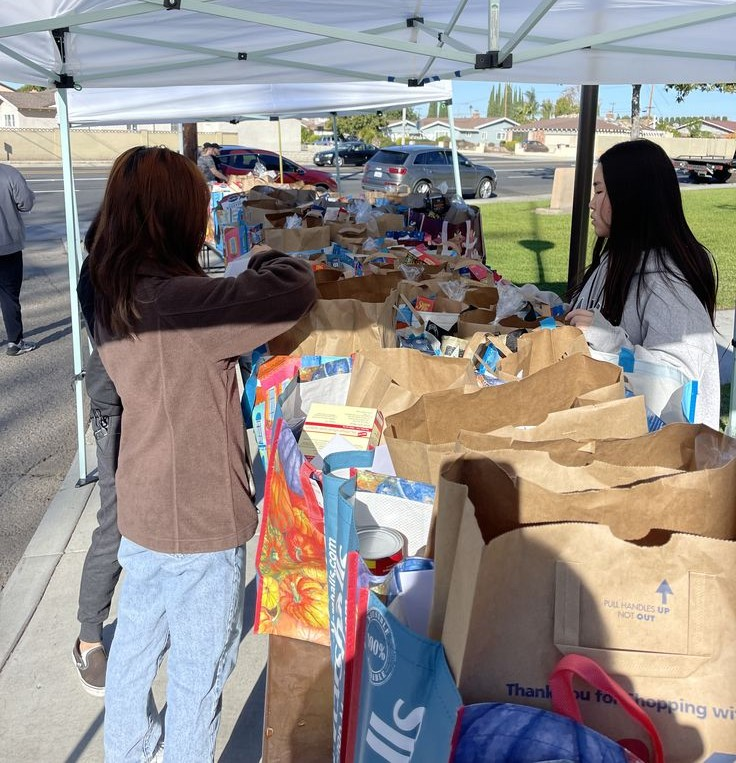
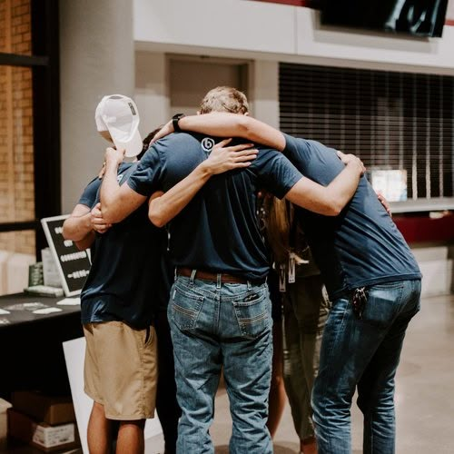

Nossos Projetos
Navegue pelas nossas frentes de ação e descubra como a solidariedade pode transformar vidas.
Calendário de Acolhimento
Campanha de Vacinação
07:00 - 16:30 | Unidade Móvel
Distribuição de Kits de Higiene
11:00 - 13:00 | IMIP
Mutirão de Arrecadação
8:00 - 12:00 | IMIP
Iniciativas de Apoio ao Paciente

Rede de Transporte Solidário
Iniciativa comunitária que auxilia pacientes e acompanhantes no deslocamento entre hospedagens, hospitais e centros especializados.
Guia de Apoio ao Paciente
Rede de orientação com informações sobre transporte, alimentação, farmácias e serviços essenciais próximos aos polos hospitalares.
Espaço Reconectar
Atendimento psicológico humanizado para pacientes e acompanhantes, com rodas de conversa, escuta ativa e apoio emocional contínuo.
Suporte ao Cuidador
Roda de Conversa & Acolhimento
14:00 - 16:00 | Espaço Conexão
Oficina de Saúde Emocional
19:00 | Evento Online Integrado
Sessão de Relaxamento Guiado
18:30 | Espaço Bem-Estar
Ambientes de acolhimento

Casarão da Solidariedade
Espaço pensado para oferecer conforto, privacidade e segurança a acompanhantes durante longos períodos de tratamento fora do domicílio.

Espaço Reconectar
Atendimento psicológico humanizado para pacientes e acompanhantes, com rodas de conversa, escuta ativa e apoio emocional contínuo.

Ponto de Conexão Digital
spaço equipado com internet, computadores e salas silenciosas para acompanhantes que precisam estudar, trabalhar ou resolver questões pessoais durante o tratamento.
Rede de Apoio Voluntário
Instrução Geral de Segurança
09:00 | Entrevistas e Documentação
Mutirão de Organização de Doações
13:00 | Separação de kits e materiais
Capacitação em Acolhimento Humanizado
08:30 | Hospital das Clínicas - UFPE
Programas Sociais em Andamento

Juntos Pelo Acolhimento
Projeto voltado à mobilização de parceiros, anfitriões e investidores sociais que desejam fortalecer o acesso à hospedagem solidária por meio do Care.All.

Rede de Doações Solidárias
Organização colaborativa para arrecadação e distribuição de kits de higiene, roupas e itens essenciais para famílias em tratamento.

Equipe de Acolhimento
Voluntários preparados para orientar famílias recém-chegadas aos polos hospitalares e oferecer apoio inicial durante o atendimento.